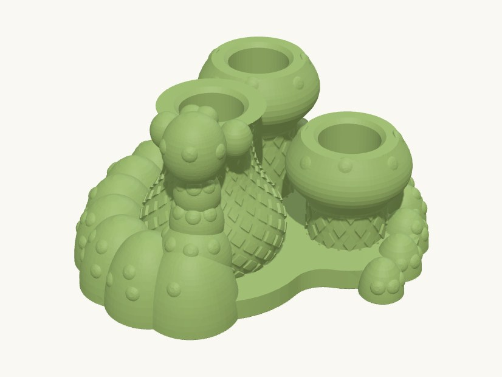

Work / Desk & decor

Print reports
- WorkedPLA2026-09-09
Printed and it works well. The Ø16 bores with the diamond lattice, wrapped caterpillar and reared head. Confirmed by the user as this build, in PLA.
Technical details
Part: holder — one solid, garden ground and the caterpillar's underside flat on the bed.
The scene: a bulbous hookah whose neck is the pen socket, two toadstools with a cartridge hidden down the stalk of each, a garden patch they all stand in — and an eighteen-segment caterpillar wrapped right around the outside of the lot, rearing up the hookah at the front. The body sweeps up the left, across the back behind mushroom A and down the right, and the tail curls back in at the front beside mushroom B, leaving the C open at the front so the garden is never fenced in. Out of its front segment a four-ball neck climbs the pot to the rim, where the head sits level with the socket with its eyes turned up at the mouthpiece and two stubby arms closing on the pen either side of it. The pen IS the hookah's pipe — it drops into the rim and stands 102 mm proud — and the pose is the whole joke: the caterpillar is not holding the thing, it is using it. Cartridges go in mouthpiece up: mushroom A swallows 40 mm of a 55 mm cartridge (15 mm shows), the shorter mushroom B 29 mm (26 mm shows, so one is easy to grab and one is properly hidden).
Everything that reaches up to the rim is sized by ONE constraint, and it is the reason the neck tapers rather than hugging the pot: the pot's wall narrows from r 19.3 to r 11.0 as it rises but the Ø16.6 bore does not, so a neck that follows the wall walks straight into the parked battery. Neck balls, head and arms all keep their nearest point at least 8.8 mm off the axis against an 8.0 mm pen; fit_checks is what proves it, and it caught 45 mm3 of exactly that mistake at the smaller pen diameter this started from.
The pen and the cartridges were re-measured at Ø16 after the first version was drawn around Ø13 and Ø11. That is not a one-line change: the bore went up 3 mm in radius while the stem and the stalks still needed 2.7 mm of wall, so every profile radius grew, both toadstools moved out to stop their Ø33.6 caps fouling each other and the Ø39 belly, the caterpillar's back arc moved out with them, and the whole neck moved out again to clear the fatter pen.
Surface work, in the lib/form order — bores first, then the flutes, then the studs. All B-rep: there is no mesh step, so the part is one exact solid and exports STEP as well as STL and 3MF.
* **A diamond lattice** (form.flutes, twice) on all three turned bodies: the same flute band cut once each way, so the two helices cross and leave faceted diamonds standing between them. Both passes measure against the same un-cut solid — reference the already-fluted body and the second pass sinks to twice the depth wherever it crosses the first. Depth is 0.7 mm, set by the THINNEST wall the band crosses (the 2.7 mm stem and stalks, not the 9 mm belly), which leaves five extrusions under the deepest part of a groove. The twist is given as a rate, 3.5 deg per mm, so that the 42, 23 and 12 mm bands all come out with the same helix angle. * **Studs** (form.surface_studs): toadstool spots on both caps, tubercles down the caterpillar's back and up its neck, and the two eyes, each seated on whatever surface a ray finds and tilted with it.
Straight flutes on the stalks were tried first and read as scratches beside the hookah's diamonds; one pattern over all three bodies is what makes it look designed rather than decorated.
All three bores are blind: a vent under a cartridge would drip a leaky cart onto the desk.
Print orientation: as returned, no supports. An upper half-ellipsoid has no down-facing surface at all, so every body segment, stud and eye is self-supporting; the mushroom caps and the hookah's belly never flare faster than 37 degrees from vertical; every bore floor is an up-facing floor. The build reports ~1000 mm2 of >45 deg overhang and all of it is accepted: 580 mm2 is the foot recesses and the bed chamfer, in the first 6 mm off the plate, and most of the rest is the down-facing side of a 0.7 mm decorative groove, which needs no more support than a chamfer does. The neck is the one thing here that COULD print as unsupported nonsense — a rearing chain of balls is a 90-degree overhang all down its underside — so every ball is half sunk into the pot and sits on the one below it, and the head leans back out over the rim by only 25 degrees from vertical. Material: PLA.
Stability is the governing constraint, not fit: with a cartridge screwed on, ~150 mm of pen stands above a socket floor 6 mm off the desk. stability() reports three cases; the governing one is loaded, standing on its rubber feet, because fitted feet REPLACE the ground as the support polygon. Five of the six feet sit under a body segment — wrapping the caterpillar around the outside makes it the perimeter of the part, and standing on it is worth a couple of degrees of tip angle over the old stance even after the reared neck put 5 cm3 up at rim height.
Three things this shape taught, all recorded where they belong: a surface of revolution that closes to a POINT tessellates into a loose degenerate triangle and reads as a non-watertight part (see lib.form.blobs.dome, which stops at a 0.4 mm flat instead); Z-SCALING a body scales its slopes, so mushroom B has its own profile rather than being the tall one squashed (see params); and cutting detail into a spline surface of revolution reliably leaves OCC a needle of uncut skin and a collapsed shell or two in the tessellation (see lib.component.drop_debris and scripts/_common._without_debris).
Assumptions: the pen and the cartridges are Ø16 as the user measured them, and the socket is sized from that. Still assumed, and still worth checking against the real thing: the battery is 90 mm long, a cartridge is 55 mm, and the two weigh 30 g and 10 g for the stability sum. All single constants in params.py.
Parts
| Part | Size (mm) | Volume | Thinnest wall | Printability |
|---|---|---|---|---|
| holder | 102.042 × 91.592 × 54.188 | 107.1 cm³ | 0.08 mm | passes |
Engineering views
Downloads
- holder.step118.0 MB, too large to host
- holder.stlSTL · 17.2 MB
- vape_pen_holder.3mfwhole plate · 20.9 MB
Library parts used
Parametric components shared with the other designs; see the parts library.
| Component | What it does | Printed in |
|---|---|---|
Ball chainform.ball_chain | Chain of overlapping ellipsoids at given (x, y, z, r): the part of a creature that leaves the ground — a reared neck, a tentacle, a raised tail — which a dome_chain cannot do. | PLA |
Blob outlineform.blob_outline | Smoothed union of circles as a sketch (blob / pebble / organic plate outline). | PLA |
Dome chainform.dome_chain | Chain of overlapping domes stepped along a spline path at equal spacing, tapering head to tail: caterpillars, snakes, larvae, vines, bunting. | PLA |
Flutesform.flutes | Cut vertical flutes into (or raise ribs on) the outer surface of any body, following its profile; polar array about Z. | PLA |
Revolved bodyform.revolved_body | Solid of revolution about Z from an (r, z) profile, spline-smoothed by default, base on z=0 (vases, planters, lamps, knobs). | PLA |
Surface studsform.surface_studs | Domes seated where each ray first meets a body's surface, aligned with the local normal: toadstool spots, caterpillar tubercles, eyes, rivets, grip bumps. | PLA |
Rubber-foot recessprimitives.rubber_foot_recess | Negative (subtract me) shallow recess to locate a stick-on rubber foot; top face at z=0, extends down. | PLA |
Socket arrayprimitives.socket_array | Negative (subtract me): row or grid of blind cylindrical sockets with chamfered lead-ins; socket rims at z=0, bores extend down. | PLA |
Source: models/vape_pen_holder · built 2026-09-09 13:51
Caterpillar pen stand
A caterpillar curling round three mushroom cups that hold a slim pen and two spare cartridges upright.
Sized to the pen, not the other way round: each cup is bored to the measured barrel with a lattice sleeve, and the caterpillar's body doubles as the weighted base. Printed in PLA and in daily use.
- Size
- 102 × 92 × 54 mm
- Print plate
- 102 × 92 × 54 mm
- Parts
- 1
- Filament (PLA)
- about 70 g
- Print time
- about 4.8 h
- Status
- Printed in PLA
Want it in another size, colour or material? Say so in the request: fitting it to your object is a $5 adjustment, and you see the revised design before it's printed.
Measure it, describe it, and we'll draw it.
Requests take a few minutes. You'll get the design and a price back before anything is printed.